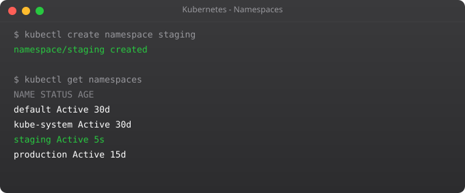

Imagine you work at a company where three teams — frontend, backend, and data — all share one Kubernetes cluster. Without any organisation, all their pods, services, and secrets are mixed together in the same default namespace. Frontend can accidentally connect to backend's database. The data team's batch jobs can consume all cluster CPU and starve the frontend. A junior engineer can accidentally delete something that belongs to a different team.
This is exactly the chaos that Kubernetes Namespaces solve. A namespace is a virtual cluster within your physical cluster — a way to divide resources, apply independent access controls, and set resource limits per group. In this part, we will set up namespaces for different environments, apply ResourceQuotas to prevent any namespace from consuming too much, and use LimitRanges to give containers sensible defaults.
Kubernetes creates four namespaces by default. The default namespace is where all resources go when you do not specify one. The kube-system namespace holds Kubernetes internal components — CoreDNS, the API server proxy, and others. You should never deploy your own applications here. The kube-public namespace is readable by all users, used for cluster-wide public information. The kube-node-lease namespace holds heartbeat data that the cluster health system uses to detect node failures.
kubectl get namespaces
# Short form
kubectl get ns# Create namespaces imperatively
kubectl create namespace development
kubectl create namespace staging
kubectl create namespace production
# Or using YAML
kubectl apply -f - <# Run a pod in the development namespace
kubectl run nginx --image=nginx -n development
# List pods in development namespace
kubectl get pods -n development
# List pods in ALL namespaces
kubectl get pods --all-namespaces
# Or shorter:
kubectl get pods -ATyping -n namespace-name for every command gets old quickly. You can set a default namespace for your current context so you do not have to keep specifying it.
# Set development as your default namespace
kubectl config set-context --current --namespace=development
# Verify
kubectl config view --minify | grep namespace
# Now kubectl commands work in development namespace by default
kubectl get pods # Same as kubectl get pods -n development
# Switch back to default
kubectl config set-context --current --namespace=defaultWithout ResourceQuotas, one team can deploy hundreds of pods and consume all the cluster's CPU and memory, starving every other team. ResourceQuotas set hard limits on total resources consumed within a namespace.
apiVersion: v1
kind: ResourceQuota
metadata:
name: dev-quota
namespace: development
spec:
hard:
# Compute resources
requests.cpu: "4" # Total CPU requests cannot exceed 4 cores
requests.memory: 8Gi # Total memory requests cannot exceed 8GB
limits.cpu: "8" # Total CPU limits cannot exceed 8 cores
limits.memory: 16Gi # Total memory limits cannot exceed 16GB
# Object counts
pods: "20" # Maximum 20 pods in this namespace
services: "10" # Maximum 10 services
persistentvolumeclaims: "5" # Maximum 5 PVCs
secrets: "20"
configmaps: "20"kubectl apply -f development-quota.yaml
# Check current quota usage
kubectl describe resourcequota dev-quota -n development
# Try to exceed the quota - Kubernetes will reject the request
kubectl run test-pod --image=nginx -n development # Works until pod limit is reachedResourceQuotas set limits for the entire namespace. LimitRanges set limits per individual container. The most important use of LimitRanges is setting defaults — because if you have a ResourceQuota that requires every pod to specify resource requests, pods without requests will be rejected. A LimitRange automatically assigns default resource requests and limits so your deployments work even if developers forget to specify them.
apiVersion: v1
kind: LimitRange
metadata:
name: dev-limits
namespace: development
spec:
limits:
- type: Container
default: # Applied if container doesn't specify limits
cpu: "500m"
memory: "256Mi"
defaultRequest: # Applied if container doesn't specify requests
cpu: "100m"
memory: "128Mi"
max: # Hard maximum any container can request
cpu: "2"
memory: "2Gi"
min: # Hard minimum (prevents zero-resource pods)
cpu: "50m"
memory: "64Mi"kubectl apply -f development-limits.yaml
kubectl describe limitrange dev-limits -n development
# Now any pod deployed without resource specs gets the defaults automatically
kubectl run auto-limited --image=nginx -n development
kubectl get pod auto-limited -n development -o jsonpath='{.spec.containers[0].resources}'By default, pods in different namespaces can communicate with each other. The DNS name format for cross-namespace communication is: service-name.namespace.svc.cluster.local
# Run a service in the development namespace
kubectl run backend --image=nginx -n development
kubectl expose pod backend --port=80 -n development
# From a pod in the default namespace, reach the development backend
kubectl run test --image=busybox --rm -it -- sh
# Inside the pod:
wget -qO- http://backend.development.svc.cluster.local
# exitIn my experience working on real clusters, here is how teams typically organise namespaces. One common pattern is environment-based: dev, staging, and production namespaces, each with tighter ResourceQuotas as you go up. Another pattern is team-based: team-frontend, team-backend, team-data — useful when multiple teams share a cluster and you want to charge back costs per team.
Whatever pattern you choose, always set ResourceQuotas and LimitRanges in every namespace. A single runaway batch job without limits can take down an entire cluster.
# WARNING: This deletes EVERYTHING in the namespace
kubectl delete namespace development
# Watch the deletion progress
kubectl get ns development -w
# Status will show "Terminating" until all resources are cleaned upYour cluster is now well-organised with namespaces and protected by resource quotas. The next big piece is exposing your applications to the internet in a production-grade way. In Part 8, we cover Ingress Controllers — the proper way to route external HTTP traffic to multiple services, with path-based routing, SSL termination, and virtual hosts, all through a single load balancer.
Namespaces divide a single cluster into virtual clusters. Use them to separate environments (dev/staging/prod), isolate teams, apply different RBAC rules, and set independent resource quotas per group.
ResourceQuota limits total consumption across an entire namespace. LimitRange sets defaults and maximums per individual container. Use both together — ResourceQuota caps the namespace total, LimitRange ensures every pod has sensible defaults.
Yes, by default. Use the full DNS name: service.namespace.svc.cluster.local. To block cross-namespace traffic, create NetworkPolicies that restrict ingress to pods within the same namespace only.
default (your workspace), kube-system (internal components), kube-public (public cluster info), kube-node-lease (node heartbeat data). Never deploy applications into kube-system.
Everything inside is deleted — pods, services, secrets, configmaps, PVCs. Deletion is permanent. The namespace enters Terminating state while Kubernetes cleans up all resources, which can take several minutes.